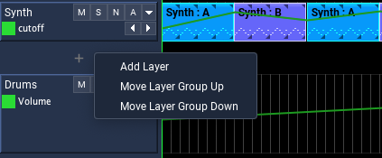
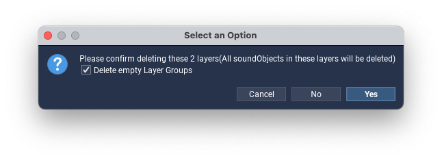
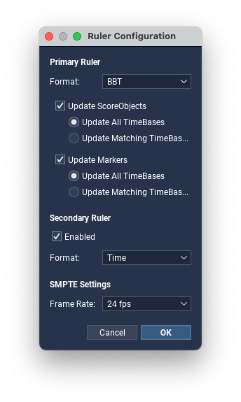
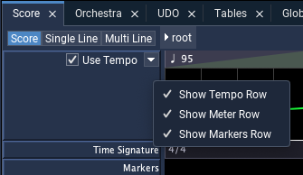
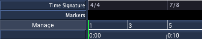

Score Timeline

Overview
The Score is Blue’s main editor for arranging material in time. It is a modular timeline built from Layer Groups. Each Layer Group provides a timeline view on the right and layer controls on the left.
For positions, durations, rulers, and snap formats, see Time System.
User-Interface Walkthrough
Main toolbar
The toolbar above the Score includes the transport controls used while working on the timeline:
- previous marker and next marker buttons for navigating between markers
- a rewind button that returns the render start to the beginning of the score and clears the render end
- play and stop buttons for starting and stopping realtime rendering
- an
Fbutton for toggling follow-playback scrolling - a loop button for repeating playback between the render start and render end
Playhead display
The Playhead display shows the current playback position. It can show one or two simultaneous readouts.
- The primary readout follows the primary ruler by default.
- The secondary readout follows the secondary ruler by default.
- Right-click the display to choose whether each readout syncs to the ruler or uses its own display format.
- The secondary readout can be turned off from the same menu.
This makes it possible to keep the timeline ruler in one format while watching playback in another.
Selection display
The Selection display shows the current render selection:
- render start
- render end
- selection duration
By default it follows the primary ruler. Right-click the display to choose another format if needed. If no render end is set, the display shows - values.
BlueLive controls
Blue also provides a BlueLive toolbar for live performance and testing:
blueLivestarts or stops BlueLive renderingRecompilerecompiles and restarts the current BlueLive renderAll Notes Offsends an all-notes-off event to stop hanging notesMIDI Inputenables or disables Blue’s MIDI input for BlueLive
Score Bar
The Score Bar shows which container you are editing. At the root score you will only see root. When you edit a PolyObject, the bar shows the path back to the root score so you can move in and out of nested timelines.
Layer Groups
A Score is divided into Layer Groups. The header area shows the controls for the group’s layers, while the timeline area shows the material that belongs to that group.
Layer Groups can be managed directly in the timeline or through the Score Manager. All Layer Groups also support NoteProcessors. A NoteProcessor applied to a Layer Group affects all notes generated inside that group.
SoundObject Layer Groups
SoundObject Layer Groups are the most general timeline type. They hold SoundObjects of any supported kind and are also where Parameter Automation is drawn.
Each SoundLayer can contain different kinds of SoundObjects. A layer is not tied to a single instrument or mixer channel, so one layer can hold material that generates different kinds of Csound data.
Right-click a SoundLayer to add a SoundObject, paste from the buffer, or open other layer commands. Once a SoundObject is on the timeline, you can select it, move it, resize it, copy it, duplicate it, and open it for editing. Double-click a SoundObject to open its editor. Use F3 to open Sound Object Properties and Ctrl-T to open Quick Time.
For more information on the different SoundObjects, see Sound Objects.
Pattern Layer Groups
Pattern Layer Groups use the SoundObject system in a grid-based workflow. Each Pattern layer holds one source SoundObject, and the grid determines where that material is triggered.
This makes Pattern Layer Groups useful when you want repeated or regularly spaced material without placing each event separately on the Score. The layer determines the playback position for each enabled cell, while the source SoundObject defines the generated material.
Patterns Layer Menu Options

New Pattern layers use a GenericScore SoundObject with a duration of four beats and a None time behavior. From the layer popup menu, you can replace the source SoundObject from the buffer, switch it to another SoundObject type, or open the source object for editing.
Click a grid cell to toggle it on or off. Click and drag across multiple cells to apply the same change across a range. You can also click the layer panel on the left to bring the source SoundObject into the editor.
Audio Layer Groups
Audio Layer Groups provide DAW-style audio clip editing. Each Audio Layer maps to a channel in Blue’s mixer, and automation for effect parameters is available on the layer.
You can drag audio files from the operating system or Blue File Manager onto an Audio Layer. Layer names also appear under their corresponding mixer channels.
Once a clip is on the timeline, drag the clip body to move it in time. Drag the left edge to move the clip start and the file start together. Drag the right edge to change the clip duration. Double-click a clip to open its editor, or use F3 to open the Properties window.
Audio clips support fades. Fade handles appear when the pointer is over a clip. Drag a fade handle to change the fade duration, and right-click within a fade area to choose the fade type. Like Ardour, upon which much of the audio layer system is based, Blue uses crossfades for clip fades.
For more information about fades, see Ardour’s manual entry on Region Fades and Crossfades.
At the moment, 8-bit and 16-bit audio data, in mono and stereo, with sample rates from 8 kHz to 48 kHz are supported.
Working with Layers Inline
Many day-to-day layer operations can be done directly in the timeline.
Adding and moving layer groups

Between layer groups you will find a spacer panel. When you hover it, a small + indicator appears.
- Double-click the spacer to add a new layer to the group above it.
- Right-click the spacer to open a menu with
Add Layer,Move Layer Group Up, andMove Layer Group Down.
Layer selection in headers
Layer headers support selection within a group and across groups:
- Click a layer header to select it.
- Shift-click within a group to extend the selection.
- Shift-click in another group to create a cross-group selection.
When a selection spans multiple groups, Blue keeps that selection coordinated across the visible header panels.
Deleting layers across groups
Layer header context menus support deleting selections that span multiple groups. If deleting the selected layers would empty one or more groups, Blue offers a Delete empty Layer Groups option in the confirmation dialog.

Add-above, add-below, and push-up or push-down remain single-group operations. When a cross-group selection is active, the context menu shows only the actions that apply to that selection.
Renaming layers
Double-click the layer name in the header area to rename it in place.
Score Manager

The Manage button opens the Score Manager. At the root score it manages the root Layer Group list. Inside a nested timeline such as a PolyObject, it manages the Layer Groups for that container.
Use the manager when you want to:
- add or remove Layer Groups
- add, remove, or reorder layers within a group
- move multiple Layer Groups together
- rename groups or layers
- change default layer heights
The controls on the left side of the dialog apply to Layer Groups. The controls on the right side apply to layers in the selected group.
Time, Rulers, and Snap
Ruler configuration

The Score uses the Ruler Configuration dialog to set:
- the primary ruler format
- an optional secondary ruler format
- SMPTE frame rate
- whether existing ScoreObjects and Markers are converted when the primary ruler changes
The primary ruler also determines the default time base for newly added score objects and newly imported audio clips.
Secondary ruler
The secondary ruler is optional and can show a second representation of the same timeline at the same time. For example, you can keep bars and beats visible on the primary ruler while also showing clock time or SMPTE on the secondary ruler.
Snap

Snap is configured independently from ruler display.
- Left-click the
Snapbutton to turn snap on or off. - Right-click the
Snapbutton to choose the snap value.
Snap values are available in musical, triplet, time-based, SMPTE-based, sample-based, and auto categories.
Timeline Rows

The left header area includes visibility controls for the timeline rows that sit above the layer groups.
Right-click the left-side row labels or the secondary-ruler spacer to show a popup with:
Show Tempo RowShow Meter RowShow Markers Row
This visibility is stored with the timeline state, so you can keep only the rows you need visible while working.
Tempo row

The tempo row has two parts:
- a compact control row on the left with
Use Tempoand the expand or collapse control - a tempo region bar and optional expanded line editor on the right
The region bar gives an overview of the tempo map. Each region shows its tempo and gives visual feedback for constant or linear tempo changes.
Common tempo-row actions:
- Double-click the tempo region bar to add a new tempo point or edit an existing one.
- Right-click a tempo region to edit the point, switch between constant and linear curve types, or delete the point.
- Use the edit dialog to position tempo points with the same time fields used elsewhere in Blue.

If you prefer to manage tempo with Csound t statements, you can leave Blue’s tempo system disabled. Avoid using both at the same time.
Meter row

The meter row shows the project’s time-signature map as regions. You can:
- double-click a region area to add a new time-signature change or edit an existing one
- right-click a region to edit or delete the time-signature change
Measure-based ruler formats such as BBT, BBST, and BBF depend on this map, so editing the meter row directly affects how those rulers and time entries are interpreted.
Markers row
The markers row provides navigation and structural reference points. Marker times use the same time-entry rules as other timeline objects, and the ruler configuration dialog can update marker time bases when the primary ruler changes.
Working with SoundObjects and Audio Clips
SoundObjects
SoundObjects can be selected, dragged, resized, copied, cut, duplicated, and repeated directly on the timeline.
If you select a single SoundObject, you can edit it in two especially useful places:
F3opens Sound Object PropertiesCtrl-Topens the Quick Time dialog
In both places, start time, subjective duration, and repeat point use the same time fields described in Time System.

The Quick Time dialog is useful when you want to make timing edits without opening the full properties window. Position and duration fields follow the same rules used elsewhere in Blue.
Audio clips
Audio clips follow the same time-system conventions as SoundObjects. When you import or drag in an audio file, the clip’s initial start time uses the selected primary ruler’s time base.
Audio clip properties use the same time fields for:
- clip start time
- clip duration
Audio Layer Gestures
These gestures are specific to Audio Layer Groups:
| Gesture | Description |
|---|---|
| Drag the clip body | Move the clip in time |
| Drag the left edge | Move the clip start and the file start together |
| Drag the right edge | Change the clip duration |
Alt-drag inside a clip |
Move the file start offset without moving the clip start |
Shift-Alt-click inside a clip |
Split the clip at the clicked point |
| Drag a fade handle | Adjust fade duration |
| Right-click within a fade area | Choose fade type |
Navigator

The Navigator shows the overall structure of the current score view. The visible rectangle can be dragged to jump quickly to another area of the timeline.
Layer Header Actions
| Action | Result |
|---|---|
| Hover the spacer between groups | Shows the inline + indicator |
| Double-click the spacer | Adds a layer to the group above |
| Right-click the spacer | Opens Add Layer, Move Layer Group Up, and Move Layer Group Down |
| Click a layer header | Selects that layer |
| Shift-click another layer header | Extends the selection, including across groups |
| Right-click selected layer headers | Opens the layer-operation menu for the current selection |
| Double-click a layer name | Renames the layer |
Score Timeline Shortcuts
| Shortcut | Description |
|---|---|
spacebar |
Render project using the project’s real-time render options |
1 |
Switch to Score mode |
2 |
Switch to Single Line mode |
3 |
Switch to Multi Line mode |
alt-s |
Toggle snap on or off |
g |
Scroll to the render start time |
y |
Scroll to the render end time |
[ |
Move render start time to the previous marker or project start |
] |
Move render start time to the next marker or project end |
right click |
Open the context menu for the item under the pointer |
left click + drag |
Create a marquee selection in Score mode |
ctrl-c |
Copy selected score objects or audio clips |
ctrl-x |
Cut selected score objects or audio clips |
ctrl-z |
Undo |
ctrl-shift-z |
Redo |
delete / backspace |
Remove selected score objects or audio clips |
ctrl-d |
Duplicate selected score objects or audio clips |
ctrl-r |
Repeat selected score objects or audio clips by entering a repeat count |
ctrl-click |
Paste copied score objects or audio clips at the clicked time |
shift-click |
Add or remove a score object or audio clip from the current selection |
ctrl-t |
Open the Quick Time dialog for the selected score object or audio clip |
f3 |
Open the Sound Object Properties window |
left / right |
Nudge selected score objects one pixel |
shift-left / shift-right |
Nudge selected score objects ten pixels |
up / down |
Move selected score objects up or down one layer |
ctrl-left / ctrl-right |
Decrease or increase horizontal zoom |
When a layer-header panel has focus, up and down move the layer selection within that panel, and shift-up / shift-down extend the selection.
For the full application shortcut reference, see Shortcuts.